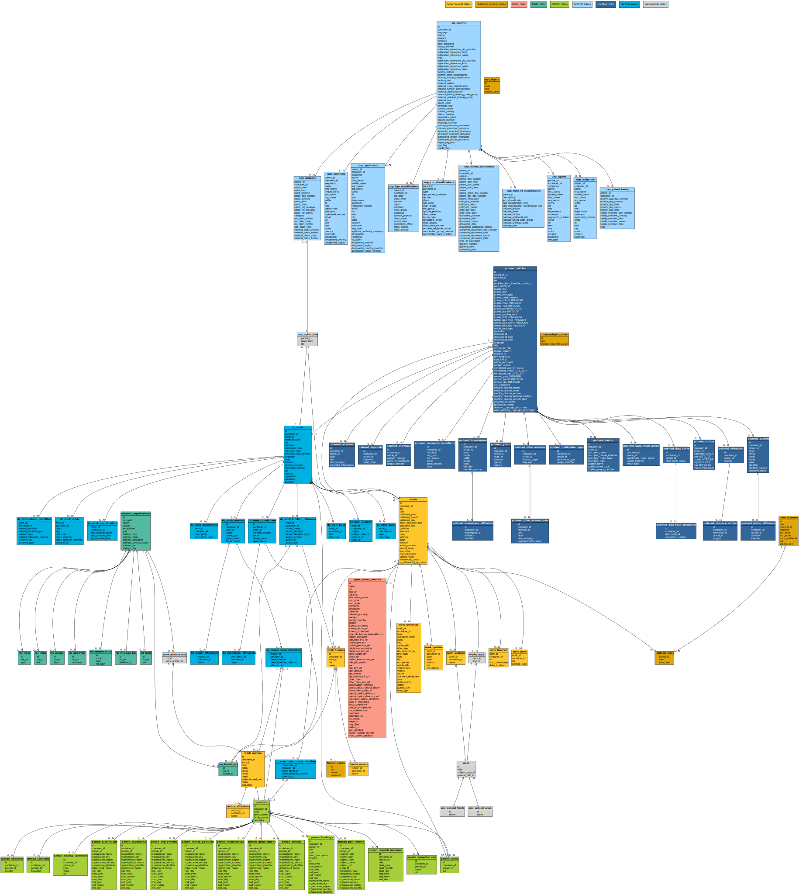

Schema diagrams¶
The complete schema of a fully-populated database appears below. Opening the image in a separate window will allow you to zoom it.

In addition, direct SQL queries can be performed on each data source’s tables. Queries involving multiple scans of the tables (e.g. relational joins) should be performed by directing alexandria3k to perform them separately in each partition. This however means that aggregation operations will not work as expected, because they will be run multiple times (once for every partition).


Other data¶
Other data include journal names, subjects (ASJCS), funders, and open access journals, as well as join tables created through available processing steps.